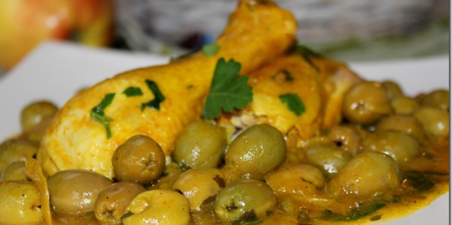
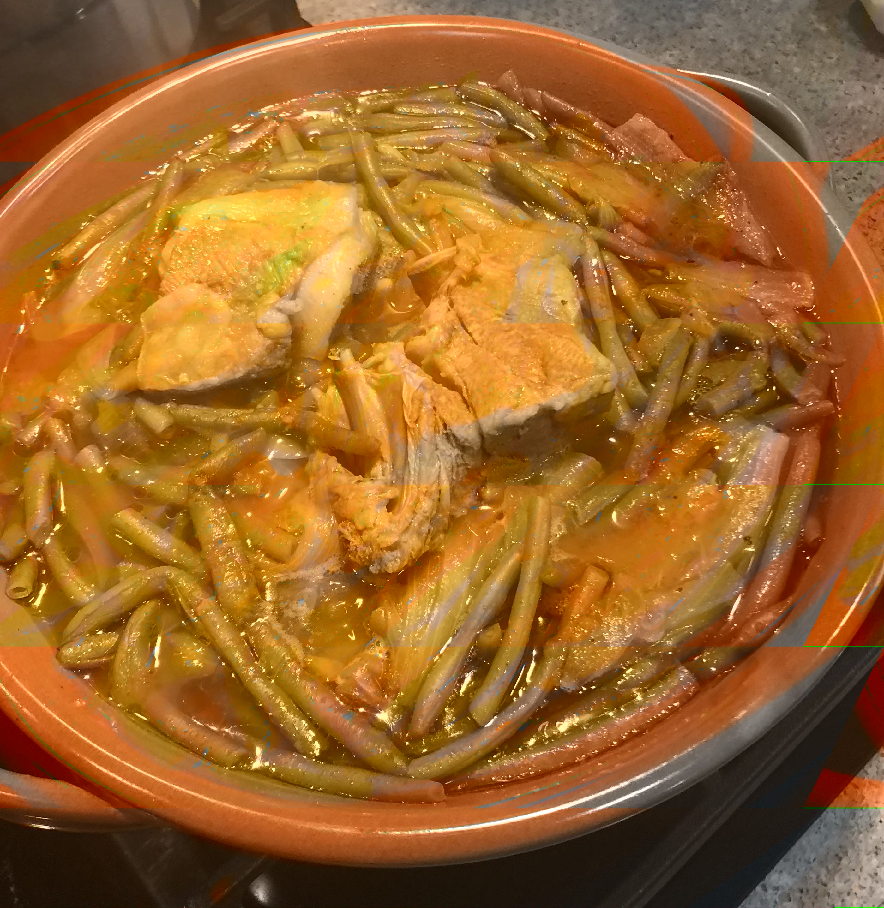
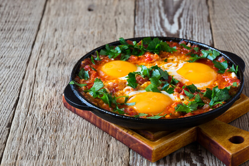
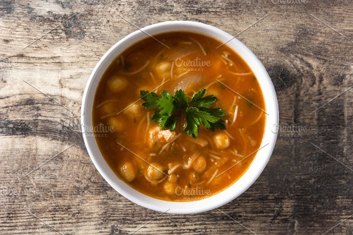
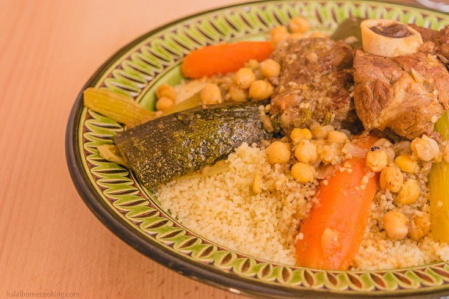
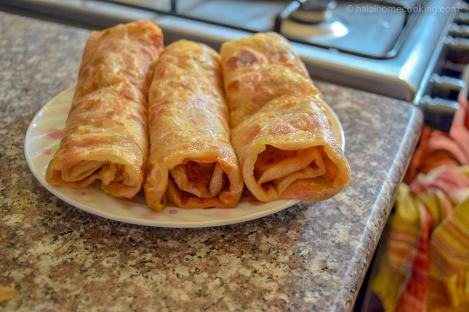
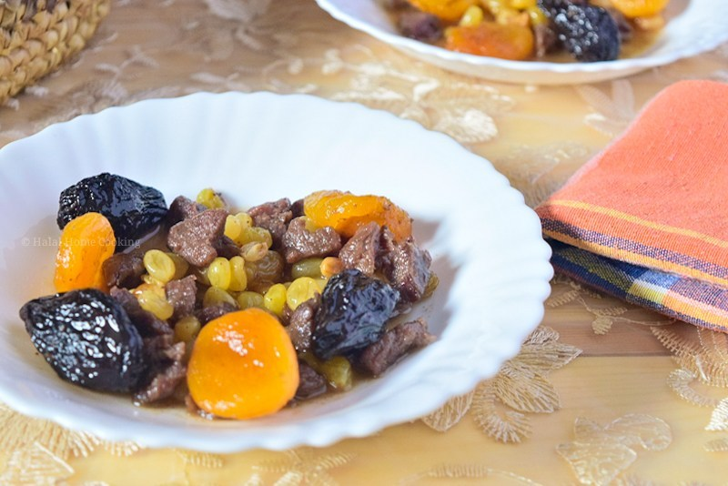

Monday
Tajine zitoune
Tajine zitoune is a traditional Algerian dish made with a combination of chicken pieces, olives, onions, carrots, mushrooms, thyme, bay leaves, lemon juice, and saffron or turmeric. The olives are blanched and dried, while at the same time, the chicken is browned with onions and spices. The meat is cooked in water with vegetables, mushrooms, and olives, and the combination is simmered until tender. Near the end of cooking, flour and lemon juice are mixed in and poured over the chicken. The dish is usually cooked in a tagine, and it is recommended to garnish it with cilantro and serve it hot with saffron rice on the side.
Tuesday
Green Beans dish
green beans with Lamb in a tomato onion sauce.
Wednesday
Shakshouka
This recipes is made with eggs poached in tomato sauce along paprika, red and green pepper and onions. Shakshuka origin’s come from North Africa; it is considered one of the most famous Middle Eastern breakfast recipes.
Thursday
Harira Soup
Harira is a herb-rich, tomato-based soup with a velvety-smooth, creamy texture, as the word hareer signifies velvetiness in Arabic. It's the most popular soup in west of Algeria
Friday
Couscous (dish)
Numerous tiny, light, tender grains, ideally arranged to form a pyramid and served on a platter at the end of a meal - that is couscous, the national dish of Algeria and a must-have dish in any Algerian restaurant. The word itself refers both to the complete dish and the tiny grains of semolina. Semolina flour is sprinkled with water until it forms into tiny pellets that are then pushed through a sieve. Couscous is usually prepared on Fridays for lunch, when whole families get together for the most important meal of the week. The dish is traditionally made in a metal steamer pot called a couscoussier, where the stew is on the bottom, while the small grains are in the perforated basket on top, cooking in the steam that is rising from the rich stew.
Saturday
Mhadjeb
Mhadjeb plural Mahdjouba are semolina based crepe-like flatbreads stuffed with chakchouka. Mhadjeb/Mahdjouba are a popular North African street-food you can recreate at home, anywhere in the world!
Sunday
LAHLOU – ALGERIAN SWEET MEAT TAGINE
A sweet tagine of meat with dried fruits and flavoured with cinnamon and orange blossom water. A much-loved Algerian Ramadan recipe.